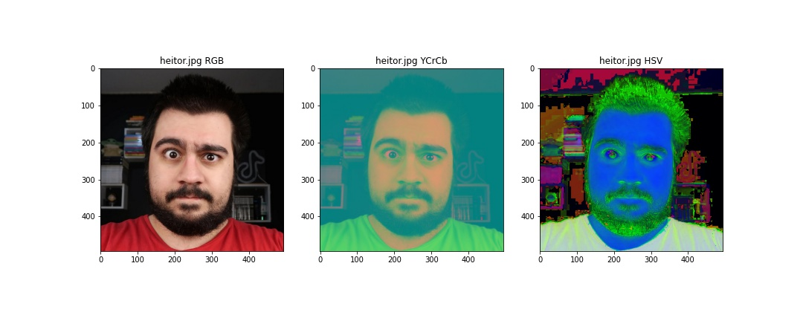
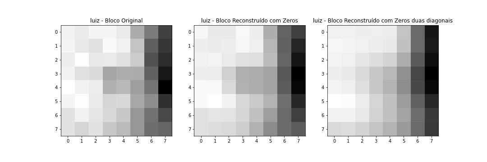

1. Objetivos
Este laboratório tem os seguintes objetivos:
- Estudar e separar as camadas de cores das imagens no Colab;
- Codificar imagens pela transformada DCT no Colab;
- Iniciar uma animação pelo Blender.
2. Roteiro
Abaixo pode ser visualizado o roteiro original do laboratório:
3. Desenvolvimento
A primeira parte do trabalho está relacionada à codificação de imagem por DCT, além de algumas outras edições. Para tanto, foi utilizado o Jupyter Notebook fornecido e editado no Google Colab. O arquivo final pode ser visualizado neste link.
Todo este laboratório de codificação de imagens foi realizado com base nas seguintes imagens, respectivamente fotos.jpg, heitor.jpg e luiz.jpg, em suas versões originais:

Estas imagens possuem as seguintes características:
- fotos.jpg: 1280x958 px com 3 camadas;
- luiz.jpg: 568x502 px 3 camadas;
- heitor.jpg: 494x494 px com 3 camadas.
Após a separação dos canais e rearranjo para formar imagem RGB, foram impressas as imagens com cores trocadas (BGR) e reais (RGB):
fotos.jpg
heitor.jpg
luiz.jpg
Posteriormente, foi realizada a conversão para os formatos YCrCb e HSV:
fotos.jpg
heitor.jpg

luiz.jpg
Abaixo pode-se ver as imagens com as camadas RGB separadas e exibidas individualmente:
fotos.jpg
heitor.jpg
luiz.jpg
Com a separação dos canais YCbCr e exibindo-os individualmente, temos as figuras a seguir:
fotos.jpg
heitor.jpg
luiz.jpg
Finalmente, foram realizadas etapas de compressão das imagens JPG com perdas. Os resultados podem ser visualizados abaixo, onde a primeira imagem de cada série é a versão original (raw), a segunda é uma versão com fator 25 e, a terceira, com fator 05.
fotos.jpg
heitor.jpg
luiz.jpg
Para comparação, abaixo podemos verificar a variação de tamanho dos arquivos (os valores estão em bytes):
- fotos.jpg Raw: 843770; Fator 25: 81001 (9.6%); Fator 05: 31135 (3.69%)
- luiz.jpg Raw: 75345; Fator 25: 14413 (19.13%); Fator 05: 6645 (8.82%)
- heitor.jpg Raw: 68287; Fator 25: 11963 (17.52%); Fator 05: 5906 (8.65%)
Em uma segunda etapa, foi aplicada a transformada discreta de cosseno em uma parte da imagem para verificar a compressão da imagem e sua relação com perdas. As imagens a seguir apresentam o resultado.
fotos.jpg
heitor.jpg
luiz.jpg

A última atividade desenvolvida no laboratório foi a animação criada com o Blender. Foram seguidas as instruções do professor Mário Minami, seguidas das melhorias de iluminação. O resultado pode ser obervado abaixo (cuidado com o áudio):
4. Conclusões
No desenvolvimento deste laboratório, foi possível validar a teoria de codificação de imagens de uma forma muito interessante cujos resultados práticos puderam fixar conceitos que, caso não fossem praticados, ficariam difíceis de compreender. Destaque para a compressão de imagens, além do DCT, cuja utilização em tratamento de imagens pode ser muito importante e relevante. Finalmente, a animação feita no Blender foi uma experiência curiosa para o grupo, que nunca tinha realizado trabalhos em softwares do gênero.